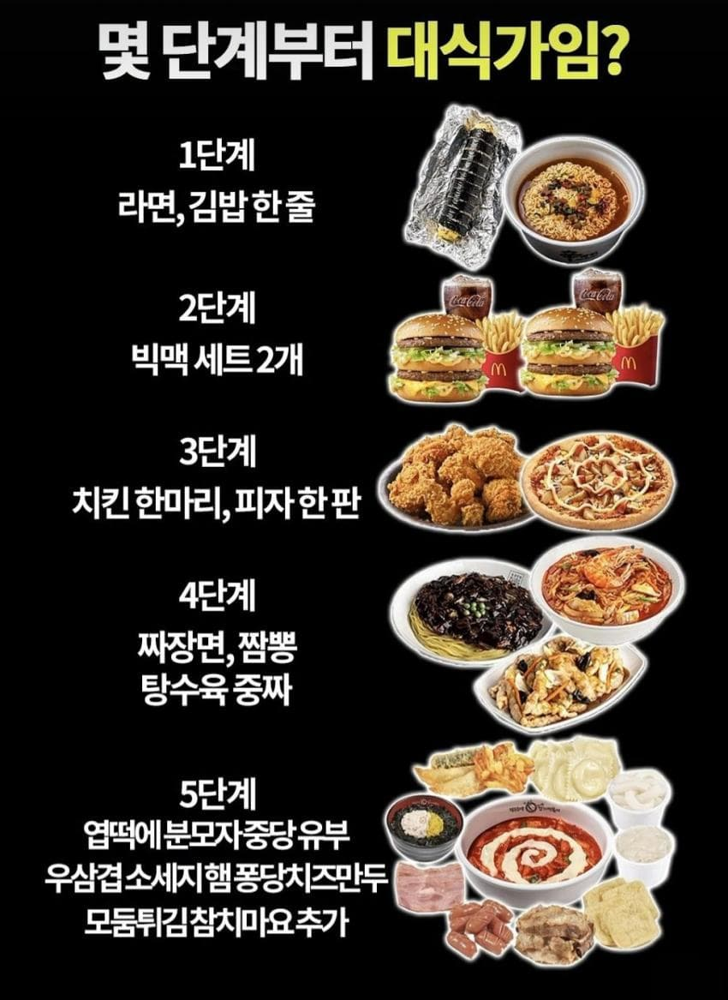

5단계의 대식가의 기준.jpg
댓글
젊을땐 4단계인데 이젠 늙은이라 3.5정도
대식가기준이 쯔양임?ㅋㅋ
2단계부터 빡쎈데?
3,4,5 중에 5번이 제일 쉬워 보이는데
1부터 돼진디?
5는 혀만긴데
4까지 가능
탄수화물만 잔뜩올려놨네
1. 간식
2. 간식2개
3. 한끼 [전투력 70%]
4. 한끼 [ 전투력 65%]
5. 안먹어봐서 양이 가늠이 안댐
3단계부터 피자 한판 or 치킨 한마리 가 아니고 and로 가는거 아님? 한번에 둘다 먹는 기준으로는 3단계는 되야 대식가 아닌가
2번까진가능
치킨 한마리먹고 피자도 한판 먹는다고?
2부터 대식
2단계 까지는 배고프면 가능할거 같은데 3단계부터는 배고파도 안될거 같다
3단계가 치킨한마리+ 피자 반이면 가능한데 도저히 완식은 못하겠네
쿠우쿠우 여백없이 꽉채운 접시 12접시먹는거 직관함 그정도 단계는 예시에없네
3 4번은 위치 바뀌어야되는거 아님?
3단계면 4끼
4단계는 해봤자 2끼인데
5도 많아봣자 3끼컷일거같은데
그저 병신
3단계랑 2단계랑 뭐가 다른데?
3단계는 치킨 한마리도 먹고 피자 한판도 먹어야함
아 그렇구나 시발
3단계는 존나 넘사벽이네 이미,,,
2.5단계까지 가능
보통은 2~3정도가 평균이라고 생각함
아 보통 기준으론 그냥 3부터 대식가인거같기도?
한창 잘먹을땐 3정도가 딱 마지노선일듯
3,4스왑해야함
1가능 2는 단품2개면 가능하겠네ㅋㅋ
운동하고나서부터 1부터 대식가다..
1가능 2는 감튀만 두개먹는거면 가능
오 다시 돌아온 틀딱 위장테스트네~ 우리 틀니 드립넷은 2번에서 대부분 컷이라구
3이 된다고? 치킨 한마리에 피자 라지가?
피나치공기준으로 3단계는 가능했는데, 마운자로 맞고나서 1단계로 줄었음. 그것도 하루 한끼만먹고.
엽떡 정말 좋아하는 언냐가 만든 짤인 것같네 ㅋㅋ
2까지는 ㄹㅇ 입터진날 어찌 가능하겠다 3은 피자 반판, 치킨 한마리는 가능
어제외근나갔다가 출출해서 빅맥세트두개에 치즈버거하나먹고 복귀했는데 마침점심시간이라 회사밥도 먹음
진짜 배고프면 2단계는 가능하겠다 ㅋㅋㅋ
난... 데리버거 단품 + 아무버거 세트 먹음 돼지런하다...
3
고기로 하면 2키로 까지 먹는데 탄수는 자신이 없음
피자 한판도 힘들고 치킨 한마리고 힘든데 둘다는 어케함 ㄷㄷ